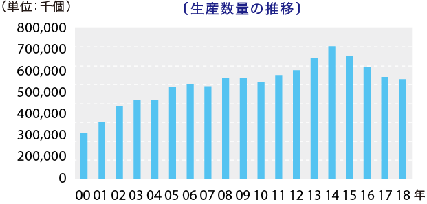

ディスペンパックジャパンは、アメリカで考案されたディスペンパック（現ブランド名：PAKITTE）を
世界で最初に容器包材として製品化に成功し生産数を伸ばしています。
また、時代とともに変化する暮らしのグローバルなニーズにお応えするため、
日々製品並びに生産機器開発に努め、豊かな生活を提供しています。
キユーピー株式会社、三菱商事株式会社、
三菱商事パッケージング株式会社の
合弁事業として設立。
アメリカで発明された「ディスペンパック
（現ブランド名：PAKITTE）」を
世界に先駆け技術開発・製品化に成功し、
世界一の生産数を誇っています。
日本では当社しか生産していない
「オンリーワン」企業でもあり、
2液を同時にワンタッチで取り出せる製品は
日本にしかないパッケージで人気製品になっています。
私たちディスペンパックジャパンは次の5つの品質方針に基づき、
豊かな社会に寄与できる製品作りに努めています。
掲げた課題に
果敢に取組み
課題の先送りをしない
企業を目指します。
従業員に優しい
企業を目指します。
お客様に信頼される
企業を目指します。
創造力豊かな
明日の人材を育てる
企業を目指します。
社会的に責務に
真剣に取組む
企業を目指します。
原資材の調達から生産、お客様のお手元に届くまでの工程を管理し、食品の安全・安心を確保します。
食品安全に関する法令・規制要求事項を順守し、お客様からの食品安全に関する要求事項に適合させます。
FSSC22000に基づいた食品安全システムが、継続的に改善され維持されるように、内・外部とのコミュニケーションを図ります。
この食品安全方針は、株式会社ディスペンパックジャパンの全従業員に周知し、食品安全に対する認識、知識の向上を図ります。
食品安全の継続的改善を図るため、目標を定め、食品安全方針の達成に努めます。
株式会社ディスペンパックジャパン
2011年10月1日
神奈川県南足柄市和田河原1255
代表取締役社長 島田洋一
1億4,000万円
キユーピー株式会社、三菱商事株式会社、三菱商事パッケージング株式会社
（1）マヨネーズ・ドレッシング類、その他各種調味料の製造販売および小分け包装加工 （2）乳製品、ジャム、その他農畜水産加工食品の製造販売および小分け包装加工 （3）化粧品の製造及び小分け包装加工 （4）前号に付帯する一切の業務
三菱UFJ銀行/新宿通支店

米国サンフォード・レッドモンド社によって考案される
三菱商事株式会社、サンフォード・レッドモンド社より日本における独占実施権取得 キユーピー株式会社、三菱商事株式会社、ダイヤパッケージング株式会社（現三菱商事パッケージング株式会社） の合弁事業として資本金4,000万円でキユーピー株式会社仙川工場内に設立
三菱重工業株式会社によって開発された世界最初の実用生産1号機、2号機設置 ホテルレストランショーに世界で初めて実用化されたディスペンパック製品を展示 キユーピー株式会社よりマヨネーズ、ドレッシングのディスペンパック充填包装の委託を受け世界最初の商業生産を開始 社団法人日本印刷産業連合会のジャパンパッケージングコンペティションにおいて通商産業省生活産業局長賞を受賞
社団法人日本包装技術協会の'88日本パッケージコンテストにおいてグッドパッケージング賞を受賞 東京ディズニーランド、東京ドーム、コンビニエンスストア、ファストフードなどの幅広い業態に採用される
ツイン（2液）タイプ容器を当社が考案し、生産開始
ディスペンパック２液容器を実用新案として登録
Lサイズ容器対応マシーン開発
脱塩化ビニール容器としてPET容器を開発製品化する
神奈川県南足柄市にHACCP対応の南足柄工場完成 サンフォード・レッドモンド社より日本国内の特許権を買い取る
脱塩化ビニール容器としてポリスチレン容器を開発製品化する '98東京PAKで日本包装管理士会が開催した、「包装管理士と生活者が選んだパッケージ展」のアンケートでバリアフリー NO.1の評価を受ける
ツインタイプの非対称容器のFタイプ容器を開発製品化する
ISO9001の認証を全社一括で取得 資本金を1億4,000万円に増資
日食優秀食品機械資材賞を受賞
ISO14001の認証を南足柄工場で取得
社団法人日本包装技術協会'03日本パッケージングコンテストにおいて納豆用「たれ＆からし」容器がグッドパッケージング賞 を受賞 キユーピー株式会社仙川工場よりドレッシング生産を移管
ブリスターパック機、仙川工場へ設置 ISO14001の認証を本社・仙川工場で取得
山梨県富士吉田市キユーピー株式会社富士吉田工場内にて富士吉田工場稼動
ISO14001の認証を全社で取得
ISO22000の認証を全社で取得 社団法人日本包装技術協会'09日本パッケージングコンテストにおいて「マルチディンプル」がテクニカル包装賞を受賞
キユーピー仙川地区再編により、仙川工場を閉鎖し富士吉田工場に集約移転 酸素吸収フィルムを使用し、賞味期限の延長を実現、家庭用製品に採用。
FSSC22000の認証を南足柄工場、富士吉田工場で取得
厚生労働省認定くるみんマーク取得
渋谷事務所から本社・開発部門を仙川キユーポート、営業部門を渋谷オフィスに移転
グッドデザイン・ロングライフデザイン賞を受賞
雑貨品の製造開始、化粧品製造業を取得
化粧品の製造開始 容器名称を『ディスペンパック』から『PAKITTE（パキッテ）』に変更 商標申請を実施